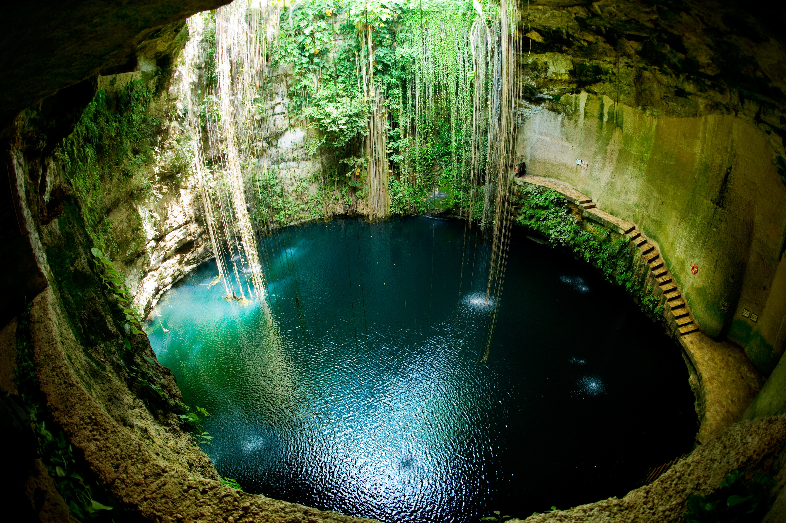

Mon compte
Mon compte Agences
Agences 0948141516
0948141516
Chichen Itzà : La Majestueuse On ne la présente plus… Site maya le plus visité du Mexique, Chichen-Itzà est considéré comme le «Versailles du Yucatán» ! Oui oui rien que ça ! Le site a été classé au Patrimoine Mondial de l’UNESCO en 1988, et a été élu, en 2007, comme l’une des sept merveilles du monde…
D’une taille considérable et très touristique, le site est bien balisé et vous accéderez aux différentes parties du lieu très facilement. Outre la magnifique pyramide principale « Kukulkan », célèbre dans le monde entier de par son excellent état de conservation et représentant un serpent à plumes, vous y découvrirez différents types d’architecture maya tous plus beaux les uns que les autres : l’immense jeu de balle, l’observatoire astronomique, et le très ornementé couvent présentant tous des architectures très différentes…
L’histoire du site est très controversée mais il semblerait que ce lieu, grande capitale maya, ait connu trois vagues de peuplement qui en font sa richesse archéologique et historique… Outre « Kukulkan » et les autres monuments, vous trouverez, aussi, tout au nord du site, le fameux Cénote Sacré de Chichen Itza ! Entièrement à ciel ouvert, ce dernier était utilisé à des fins de sacrifices, notamment humains, en l’honneur des Dieux durant les cérémonies religieuses mayas. De nombreux objets et squelettes y ont d’ailleurs été retrouvés lors de fouilles archéologiques… Et si le cœur vous en dit vous pourrez même vous y baigner !
